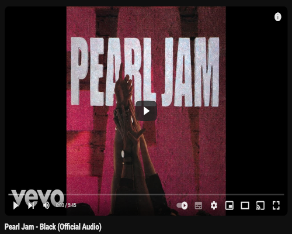

Pearl Jam é uma banda norte-americana de rock, formada em 1990 em Seattle, Washington. Desde sua origem, é formada por Eddie Vedder, Jeff Ament, Stone Gossard e Mike McCready, passou por mudanças na bateria, sendo Matt Cameron, que também compõe o Soundgarden, o atual baterista da banda. O Allmusic refere-se a Pearl Jam como "a banda americana de rock & roll mais popular dos anos 90."Os Pearl Jam foram incluídos no Rock and Roll Hall of Fame em 2017.
Formada após a dissolução da Mother Love Bone, banda anterior de Ament e Gossard, os Pearl Jam tornaram-se populares no mainstream com seu primeiro álbum, Ten. Durante a carreira, os seus membros tornaram-se conhecidos pela recusa em aderir às tradicionais práticas da indústria musical, incluindo a recusa em produzir videoclipes e o por se juntarem a um boicote contra a Ticketmaster. Em 2006, a Rolling Stone descreveu a banda como tendo "gastado muito da última década deliberadamente tentando destruir sua própria fama.
A banda já vendeu mais de 30 milhões de álbuns somente nos Estados Unidos, e aproximadamente 60 milhões em todo o mundo. É considerada uma das bandas mais importantes da década de 90 do Século 20.
Clique na imagem abaixo para assitir a playlist de clipes da banda Pearl Jam no Youtube.
